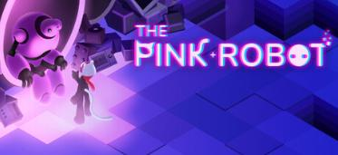
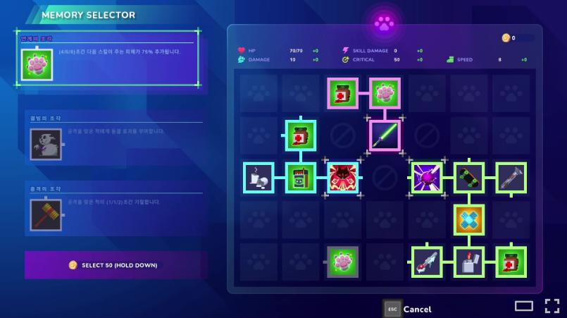
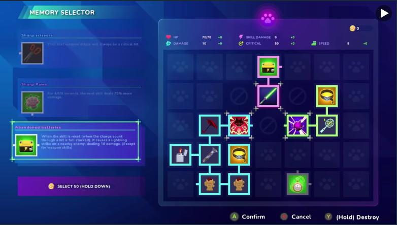
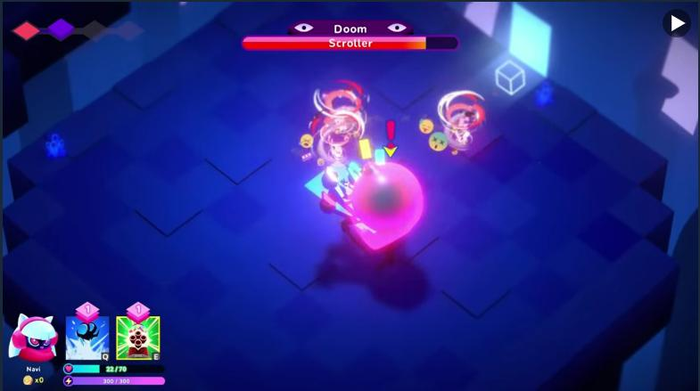
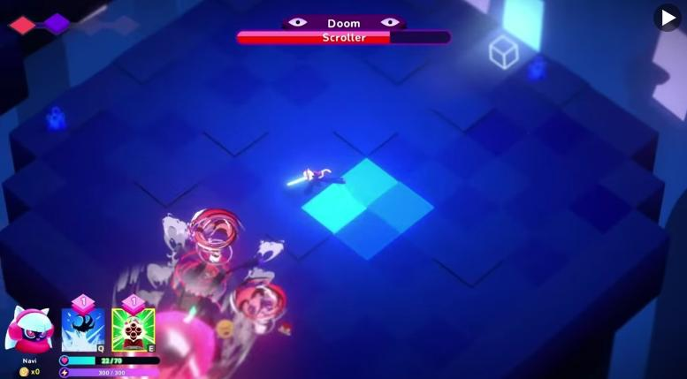
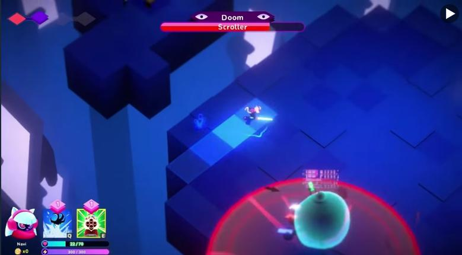
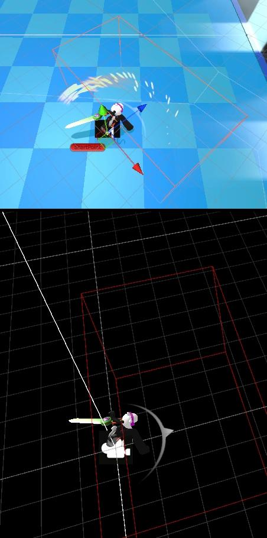
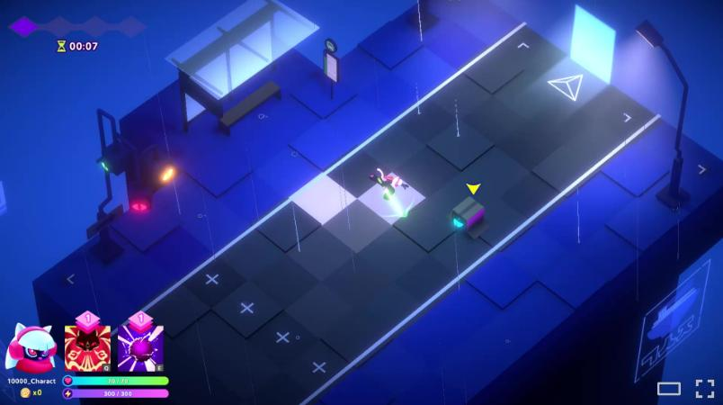

The Pink Robot Action roguelite · PC (Steam)
Sep 2025 – Mar 2026
Skill chain & memento system
- Designed and built the core build-crafting mechanic: basic attacks and skills act as triggers that cascade through linked memento effects, so a single hit can fire a chain.
- Each memento carries a randomized node direction (1–4 sides) and rarity, turning a limited board into a spatial optimization puzzle. Dozens of memento types produce genuinely different runs.
- Effect values scale with the action state the chain fired from —
Normal/Charging/Perfect— so execution skill converts directly into character power. - Built the inventory ↔ board UX: free re-slotting outside combat, colour changes on node connection, and tooltip-driven detail so a dense system stays readable at a glance.


Mini-boss AI & combat patterns
- Authored mini-boss AI with 4–5 patterns each, 15+ patterns and skills total. Three that are visible in the public demo:
- Homing tornado — travels straight for a fixed window, then tracks the player with a per-frame turn-rate cap, so it arcs wide and comes back around instead of snapping onto you.
- Telegraphed charge — when the player breaks a distance threshold, the boss lays a warning decal and then dashes hard along it.
- Pull field — while the player stands inside the zone, a vector toward the field's centre (the boss itself) is added to player movement, dragging them in without ever taking control away.



UI framework architecture
- Designed a
UIBaseroot type specialized into five categories by behaviour, with lifecycle owned exclusively by a singleUIManager— nothing creates or destroys UI on its own. - Split canvases by role to keep rebuild cost local instead of dirtying one giant canvas.
- Stack-based input layering: only the topmost interactive UI receives input; everything below it is blocked automatically, which removed a whole class of "clicked through the popup" bugs.
- Three pooling strategies, selectable per UI class through a custom attribute exposed as an interface, so each screen opts into the right cost model.
Optimization · item spawn & pickup
- Symptom
- A several-hundred-millisecond hitch the first time an item spawned in a run, plus a CPU spike that froze the screen whenever the player picked up currency.
- Diagnosis
- First spawn: prefab read and file-header load happening on the main thread — 253.69ms.
Pickup: the loop called
LoadAllon the source data once per unit of currency, soLoad+Instantiateran N times — 83ms. - Fix
- Added a warm-up pass that instantiates and immediately destroys key item models at
scene load; pre-loaded and cached the ScriptableObject source data so
LoadAllnever runs at runtime; aggregated identical items so pickup does one instantiation and one trigger check regardless of quantity. - Result
- 253.69ms → 84.08ms (−67%) on first spawn, 83ms → 31ms (−62%) on pickup.
Optimization · monster AI, behaviour tree → FSM
- The legacy behaviour-tree setup was paying full traversal cost for monsters whose real behaviour was single-state or a simple sequential transition.
- Rebuilt AI on an FSM to get ahead of the cost curve before monster counts grew, mixing Any/All conditions with Invert to keep the logic compact.
- The point wasn't "FSM is better" — it was picking the technology that matched the content, rather than defending legacy code.
- Built the graphs in NodeCanvas so designers and the director could read the state transitions visually and reason about behaviour without asking a programmer.
Optimization · runtime memory leak
- Symptom
- ~0.89GB of memory lost every 10 minutes after entering a map, with the runtime material count passing 300,000 in that same window.
- Diagnosis
- Snapshot diffing in the Unity Memory Profiler showed a specific third-party shader asset creating hundreds of identically named materials per second from inside its own code.
- Fix
- Wrote up the profiler data and a reproduction path, shared it with the team, and made the case for migrating off the faulty library — including a guideline for the replacement.
- Result
- After the team's own verification and an asset update, material count now stays under 1,000 across 30+ minutes of continuous play.
Tooling · animation preview window
- Built an editor-mode simulation loop on
EditorApplication.update, so animations and attack logic can be previewed without entering play mode at all. - Binds per-weapon override clips correctly in editor and plays them back accurately.
- Surfaces animation event positions on the timeline — exactly when the character moves and when a hitbox spawns — instead of leaving those as invisible data.
- Draws the character's predicted movement path and per-weapon hitboxes live in the scene view.
- Editing attack range or motion curves in the window updates the preview instantly and writes back to the source prefab, which collapsed the balancing loop for designers.

Automation · lighting environment persistence
- Found that Unity's Lighting Environment settings (skybox, fog, etc.) aren't stored alongside baked lighting data, so they were silently lost on scene transitions in our multi-scene setup.
- Moved that state into a ScriptableObject that is auto-extracted on scene save — no extra step for anyone, the asset just appears.
- Added automatic asset-path matching plus a scene-load hook that applies the matching environment data at the right moment, so lighting is correct without manual setup.
- A confirmation popup guards against unintentionally overwriting existing data.
- Removed a recurring source of "the lighting broke again" from the artists' day entirely.

Automation · localization via Google Sheets
- Manual entry into the Localization table stopped scaling once the project passed 10+ languages.
- Wired up the Localization package's Google Sheets integration to move translation into a shared cloud sheet.
- Chose editor-time sync over runtime sync deliberately — no credentials shipped in the build, no runtime cost, no network dependency in game.
- Split Push/Pull into granular operations so two people editing at once don't clobber each other.
- Wrote and distributed the update guideline and manual, so designers could own their own strings.